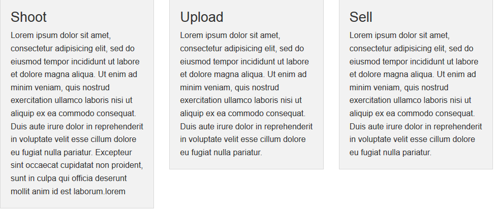

في الجزء السادس والأخير سوف نتحدث عن مواضيع مُكملة للإطار نوعًا ما، والتي رُبما تستطيع الاستغناء عنها، ولكنّك صدقني لن تفعل، لأنّ هذه الكماليات هي ما تُميز إطار العمل Foundation عن غيره من أطر العمل.
المُسوّي هو إضافة JavaScript صغيرة تُساعدك في تسوية التنسيق بين حاويتين (containers) فيما بينهما عندما يحتويان على مُحتويين مُختلفين، في الصفحة الرئيسة الخاصة بالمتجر لدينا ثلاثة أعمدة على سويّة مختلفة، كذلك الأمر في صفحة الخطط والأسعار لدينا "جداول الأسعار"، لنستخدم المُسوّي للتصحيح من تنسيقهما.

لتنسيق هذه الصناديق بشكل مُتساوي، كل ما عليك فعله هو إضافة خاصية المعلومات data-equalizer إلى العنصر الأب الخاص بهذه الصناديق، وخاصية المعلومات data-equalizer-watch لكل عُنصرٍ تُريد تسويته على نفس الارتفاع.
<div class="row" data-equalizer>
<div class="small-12 medium-4 columns">
<div class="panel" data-equalizer-watch>
<h3>...</h3>
<p>...</p>
</div>
</div>
<div class="small-12 medium-4 columns">
<div class="panel" data-equalizer-watch>
<h3>...</h3>
<p>...</p>
</div>
</div>
<div class="small-12 medium-4 columns">
<div class="panel" data-equalizer-watch>
<h3>...</h3>
<p>...</p>
</div>
</div>
</div>
<div class="row" data-equalizer>
<div class="large-4 columns">
<ul class="pricing-table" data-equalizer-watch>
...
</ul>
</div>
<div class="large-4 columns">
<ul class="pricing-table" data-equalizer-watch>
...
</ul>
</div>
<div class="large-4 columns">
<ul class="pricing-table" data-equalizer-watch>
...
</ul>
</div>
</div>

يُستخدم "التبادل" (interchange) في تحميل (load) جزء مُحدد من مُستند HTML بناءً على استعلامات وسائط (media queries) مُعينة، حيث أنك تستطيع تحميل مُحتوى مُعين دون الآخر على حجم شاشة مُعين دون الآخر، لاحظ أنّي قلّت تحميل وليس إظهار، وهو ما يحدث في "أصناف الظهور". تمت إضافة "التبادل" في الإصدار الخامس من Foundation، وهو من الميزات التي يتوفق بها Foundation على إطار العمل Bootstrap.
تخيلْ أنّ يكونَ لديك صفحة تحتوي نصًّا لخرائط Google، الخرائط سوف تظهر بشكل سلس على أجهزة سطح المكتب، ولكن على أجهزة الهاتف المحمول سيكون هناك تأخيرٌ بعض الشيء في عرض الصفحة. "التبادل" يسمح لك بتحميل صورة ثابتة على أجهزة الهاتف المحمول بدلًا من تضمين خريطة تفاعليّة، الأمر الذي يزيد من سرعة عرض الصفحة وبالتالي تجربة استخدام أفضل للمُستخدم.
تُستخدم JavaScript لتطبيق مفهوم "التبادل" لذلك عليك ضمان عرض مُحتوى ما على الصفحة في حال عدم توفرها على المُتصفح، وذلك باستخدام الوسم <noscript>.
يَستخدم Foundation خاصية المعلومات data-interchange للتحكم بتحميل المُحتوى، بحيث كل جزء نريد عرضه سوف نوفر له قيمتان، القيمة الأولى هي مسار المُحتوى، والقيمة الثانية هي استعلام وسائط (media query)، ويُوفر Foundation مجموعة من استعلامات الوسائط منها "مبدئي" default و"صغير" small و"كبير" large ولوضعية اتجاه الجهاز عمودي portrait وأفقي landscape، الصورة التالية تُوضح المجموعة الكاملة لاستعلامات الوسائط المُتوفرة.

عند عرض الصفحة يتم اختبار كل استعلام على الترتيب، والاستعلامات التي تُحقق الشرط يتم تحميل المَسار الخاص بها، حيث يتم تحميلُ مُحتوى آخر استعلام تُحقق الدلالة الخاصة بها، مع الانتباه أنّه عليك دائمًا التصريح عن الاستعلام المُسمى "مبدئي" default.
في صفحة المُنتج الخاصة بالمتجر لدينا صورة تُعرض بحجمها الكامل على جميع الأجهزة، مانُريده هو تخصيص حجم الصورة لكل قياس شاشة:
<img data-interchange="[img/green-default.jpg, (default)], [img/green-small.jpg, (small)], [img/green-medium.jpg, (medium)], [img/green-large.jpg, (large)]">
لاحظ أن أبعاد الصورة المُحملة في الشاشات الكبيرة هو 960 * 1600:
أما أبعاد الصورة في الشاشات المتوسطة هو 480 * 800:
وأخيرًا الصورة في الشاشات الصغيرة ستظهر بأصغر حجم:
النّصّ البرمجيّ السابق يعرض المُحتوى بشكل ممتاز طالما أن JavaScript مُفعلة على المُتصفح، ولضمان عرض المُحتوى في حال أنها مُعطلة علينا إضافة السطر التالي إلى النّصّ:
<noscript><img src="img/green-default.jpg"></noscript>
كما إنّه بإمكانك كتابةُ الاستعلامات لخاصة بك، حيثُ أنّ النّصّ السابق كان من المُمكن كتابته على الشكل التالي لتحصل على نفس النتيجة:
<img data-interchange="[img/green-default.jpg, (only screen and (min-width: 1px))], [img/green-small.jpg, (only screen and (max-width: 640px))], [img/green-medium.jpg, (only screen and (max-width: 1024px))], [img/green-large.jpg, (only screen and (min-width: 1024px))]">
"التبادل" من الميزات التي سوف تستخدمها بكثرة إنّ كنتَ مطوّرًا مُحترفًا، طبعًا بإمكانك دائمًا الاستعانة بحلولٍ من جهة الخادم (server-side)، ولكن مع المواقع الصغيرة "التبادل" يأتي كحلٍ مثالي على جهة العميل (client-side) ولا يتطلب الكثير من الإعداد، لذلك أنصحك بالاعتماد على هذه الإضافة في مشاريعك.
من الإضافات المُميزة جدًا في Foundation، والتي يَفتقد لها إطار العمل Bootstrap، تُتيح "الجولة" joyride أخذ المستخدم في جولة لاستعراض الموقع وميزاته، أو الإشارة إلى ميزة جديدة قُمت بإضافتها مؤخرًا إلى الموقع، أو حتى شرح كيفية إجراء مهمة (task) في الموقع عبر شرح خطوات التنفيذ.
الإعداد سيكون عبر إنشاء "قائمة مُرتبة" <ol>، أو "قائمة غير مُرتبة" <ul>، في أسفل صفحة HTML وإضافة الخاصية data-joyride، هذه القائمة سوف تحتوي مكان التوقف في كل خطوة من خطوات الجولة ومُحتوى الرسالة الخاص بكل نقطة وقوف، سوف نستخدم الصنف joyride-list لإخفاء القائمة من الظهور في المتصفح، وخاصية المعلومات data-joyride ستكون مسؤولة عن النصّ الخاص بـِHTML. لكل عنصر قائمة <li>، والتي من المُمكن أن تحتوي على عنوان ورسالة مناسبة، سنُعرف محطات الوقوف بخاصية المعلومات data-id مُعطاةً قيمةً مُناسبة، والخاصية data-text ستكون مسؤولة عن الانتقال إلى نقطة الوقوف التالية، والخاصية data-prev-text ستكون مسؤولة عن الانتقال إلى محطة وقوف سابقة، أما القائمة الأخيرة ستكون مسؤولة عن إنهاء الجولة وذلك بالخاصية data-button.
في صفحة المعرض الخاص بالمتجر سوف نُشير إلى الخيارات المتوفرة لاستعراض الصور، سوف نقوم بتحديد id لكل عنصر نريد الوقوف عنده، ومحطات الوقوف لدينا هي كالتالي: stop1 للإشارة إلى إمكانية البحث وstop2 للإشارة إلى إمكانية تصفية المُحتوى و أخيرًا stop3 للإشارة إلى إمكانية استعراض الصور عبر "ترقيم الصفحات" (pagination)، وبعد تحديد محطات الوقوف علينا كتابة النصّ البرمجيّ الخاص بالجولة:
<ol class="joyride-list" data-joyride>
<li data-id="1stop" data-text="Next"> <!-- محتوى التوقف الأول -->
<h4>Search</h4>
<p>You can search for photo.</p>
</li>
<li data-id="2stop" data-text="Next" data-prev-text="Prev"> <!-- محتوى التوقف الثاني -->
<h4>Filter</h4>
<p>You can filter the content.</p>
</li>
<li data-id="3stop" data-text="Next" data-prev-text="Prev"> <!-- محتوى التوقف الثالث -->
<h4>Explore</h4>
<p>Or explore our gallery.</p>
</li>
<li data-button="End" data-prev-text="Prev"> <!-- محتوى رسالة الانتهاء من الجولة -->
<h4>The end</h4>
<p>Happy shooting</p>
</li>
</ol>
لا تعمل "الجولة" عند انتهاء تحميل الصفحة كما في الإضافات السابقة، ولذلك عليك استدعاء الدالة start باستخدام JavaScript:
$(document).foundation('joyride', 'start');
بإمكانك تخصيص طريقة العرض كما ترغب، سرعة الانتقال من نقطة إلى أخرى، أو طريقة الانتقال، أو حتى إلغاء إمكانية التحكم "بالجولة" باستخدام لوحة المفاتيح، حيث بشكل افتراضي يُمكنك استخدام الأسهم للانتقال خطوة للأمام وخطوة للخلف وإنهاء "الجولة" بزر الهروب (Esc)، ولتعطيل هذه الأزرار بإمكانك استخدام خاصية المعلومات data-options والخيار keyboard والقيمة false، وللمزيد من التخصيص يُمكنك مراجعة التوثيق الرسمي
يُوفر Foundation حزمة من الأيقونات الاجتماعية يصل عددها إلى 76 أيقونة، وهي بصيغة SVG والتي تجعل من عرضها على شاشات Retina مثاليًا.

بإمكانك تحميل الحزمة من هنا لتحصل على ملف مضغوط، يحتوي على الأيقونات بصيغتين، SVG للمتصفحات التي تدعم هذه اللاحقة، وPNG للمتصفحات التي لا تدعم SVG. قم بفك الضغط عن الملفات وضعها في ملف CSS الخاص بالمشروع، ومن قم باستدعاء ملف CSS الخاص بالحزمة في الوسم <head> بإضافة السطر التالي:
<link rel="stylesheet" href="css/webicons.css" />
في متجرنا سوف نقوم بإضافة ثلاث أيقونات في ذيل الصفحة `footer`، وذلك باستخدام الصنف `webicon` ومن ثم اسم الأيقونة لتظهر بالحجم المتوسط، ولتخصيص الحجم يمكننا استخدام الصنفين `small` و`large`.
```html
<div class="row">
<footer class="text-center">
<a href="#" class="webicon facebook large"></a>
<a href="#" class="webicon flickr large"></a>
<a href="#" class="webicon twitter large"></a>
</footer>
</div>

يُوفر Foundation حزمة من خطوط الأيقونات وعددها 283، ويُمكنك الحصول عليها من هنا، وبعد التحميل وفك الضغط، قُم باستدعاء ملف CSS الخاص بالأيقونات في الوسم <head> بإضافة السطر التالي:
<link rel="stylesheet" href="css/foundation-icons.css" />
في متجرنا سوف نضيف "سلة التسوق" `shopping-cart` في الشريط العلوي، وذلك باستخدام اسم الأيقونة مسبوقًا بـِ`fi` كصنف للوسم `<i>`
<li class="right"><a href="#"><i class="fi-shopping-cart"></i></a></li>
أيضًا في الصفحة الرئيسة بإمكاننا استخدام الأيقونات التالية:
<i class="fi-camera"></i>
...
<i class="fi-upload"></i>
...
<i class="fi-dollar"></i>

يُوفر Foundation أقصوصات (snippets) للمحرر Sublime Text وهي مساعدة جدًا في عملية التطوير وتزيد من إنتاجيّة المُطوّر، وبإمكانك تحميلها عن طريق مُدير الحزم الخاص بالمُحرر، ولكن لا أنصح بتحميلها في بداية تعاملك مع الإطار وإنمّا عليك في البداية التعامل مع الإطار بشكل مباشر لتحفظ الصياغة الخاصة به.
إنّ كنت لا تملك مُدير الحزم فيُمكنك تحميله من هنا بعد التحميل كل ما عليك فعله هو كتابة اسم الأقصوصات.

أو بإمكانك تحميل الأقصوصات بشكل مُباشر من المستودع الخاص بها على موقع GitHub، وبعد تحميلها يمكن وضعها في المُجلد الخاص بالإضافات. في نظام التشغيل Windows يُمكن تنفيذ السطر التالي في موجه الأوامر لتحصل عليها مباشرةً.
cd "%AppData%\Sublime Text 3\Packages\User"
git clone https://github.com/zurb/foundation-5-sublime-snippets.git
لاحظ عند كتابة zf-topbar في المُحرر ثم الضغط على Tab سينتج النّصّ البرمجيّ التالي، وهي عبارة عن الشريط العلوي (topbar).

وعند كتابة zf-pagination في المُحرر ثم الضغط على Tab سينتج النّصّ البرمجيّ الخاصّ بـ"ترقيم الصفحات" (pagination).

تُقدم لك الأقصوصات أيضًا تعليق للإشارة إلى الأصناف المتوفرة لبعض العناصر، فعند كتابة zf-button والضغط على Tab النّص التالي سيوضح لك إلى الأصناف المتوفرة والتي يُمكنك استخدامها مع الصنف button.

كما تلاحظ أنّ هذه الأقصوصات تُوفر عليك الكثيرَ من الكتابة والوقت، لذلك أنصحك بالإطلاع عليها وتجربتها.
بعد قراءتك لهذه السلسلة بشكلٍ كامل ستكون جاهزًا لبناء موقعك الأول باستخدام Foundation، وليكن التوثيق الرسمي هو مرجعك الدائم فهو مُنظم ومُنسق بشكل أكثر من رائع ومع الأمثلة العملية وبلغة إنكليزية مُبسطة تُسهل عليك التعامل مع الإطار حتى لو كانت لغتك الإنكليزية ضعيفة، وأهم شيء هو التطبيق العملي واختبار ما تم التّطرقُ له في هذه السلسلة، وأرجو أن تكون هذه السلسلة قد نالت إعجابك وإلى اللقاء مع مواضيع أُخرى.